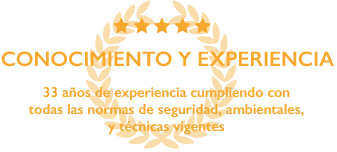
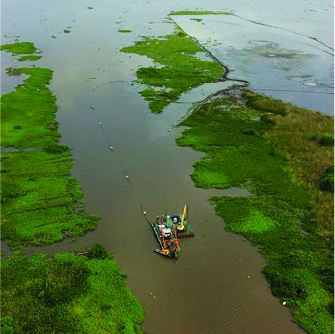
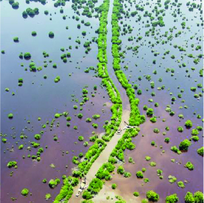
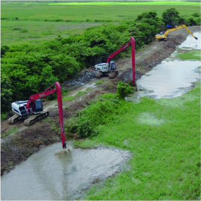
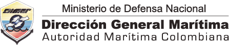

Dragados Hidráulicos y
Mecánicos, Capitales y de
Mantenimiento
Draga Triunfo, INVIAS, Río Atrato, 2021
SERVICIOS
Lo que nos mueve
Nuestro principal objetivo está enfocado en realizar dragados
hidráulicos y dragados mecánicos para el sector público y sector privado.
Además ofrecemos servicios, conocimiento y experiencia en las siguientes áreas:




-
Dragados Hidráulicos y Mecánicos, Capitales y de Mantenimiento
>> -
Remediaciones ambientales
>> -
Protección costeras y de taludes marítimos y fluviales
>> -
Estructuras Hidráulicas y Obras Civiles
>> -
Recuperación de Tierra
>> -
Levantamientos Batimétricos en cuerpos de agua
>> -
Topográfias, diseños y modelaciones hidráulicas
>>
Por medio del impacto de nuestros proyectos, hemos logrado la sostenibilidad ambiental necesaria para seguir adelante en nuestra misión basádonos en:

Licencia de Explotación Comercial No.035 (Res.759/2020) Grupo IV / Subgrupo 1: Trabajos de Ingeniería de Diseño en Dragados, Erosión Costera, Sedimentación, Relleno, Protección de Litorales y Áreas Marítimas. Subgrupo 2: Estudios, Diseños y Desarrollo de Investigaciones Tecnico-Cientificas en cualquier Disciplina, específicamente BATIMETRÍAS. Acreditadas ante la DIMAR.
-Los lineamientos del Registro Uniforme para Contratistas RUC® y las directrices de obligatorio cumplimiento definidas en el Decreto 1072 de 2015 (Capitulo 6), para el Sistema de Gestión en Seguridad, Salud en el trabajo y Ambiente “SSTA”, siendo miembros del Consejo Colombiano de Seguridad.
-Los lineamientos de la norma NTC ISO 9001:2015, cuyo alcance es el “Servicio de Dragados
hidráulicos y mecánicos” para el Sistema de Gestión de Calidad.
-Normas técnicas constructivas reconocidas.
SDC Servicios de Dragados y
Construcciones SAS
Conectate con nosotros en